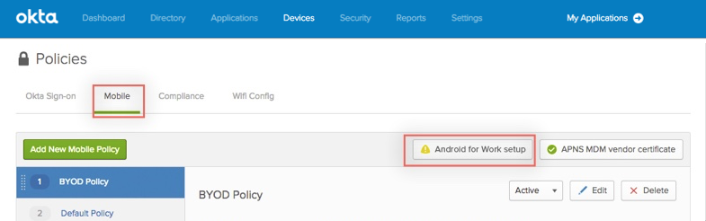
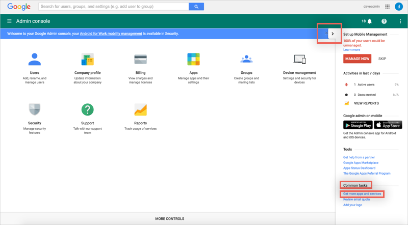
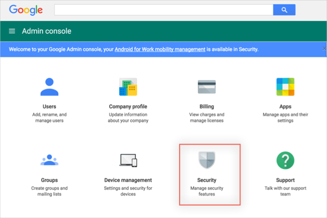
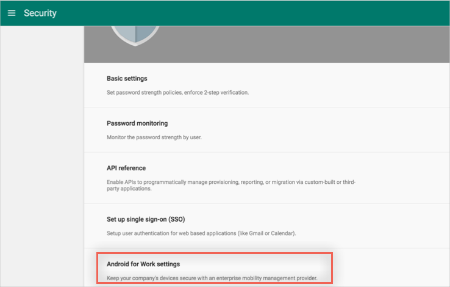
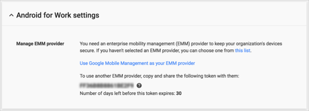
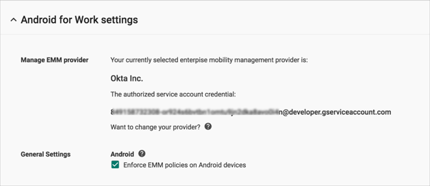

This article provides instructions to:
For reference, Google’s Android for Work support documentation is available here: https://support.google.com/work/android/?hl=en#topic=6174026
Note: As part of the setup, you will need to generate a Google Token, you may want to do that in advance, see Generating a Google Token for instructions.
In Okta, navigate to Devices > Mobile Policies.
Click the Android for Work setup button on the top right of the Mobile Policy page.
The AfW setup wizard is launched. There are two possible flows, both are described below.
No Google Apps Instance
If you don’t have a Google Apps Instance, follow the wizard and enter the following:
Your company’s domain.
Your Google token. See Generating a Google Token for instructions.
Click Next.
Create Google accounts for your users: Either:
Select Okta will automatically create Google accounts. If you select this option, to enable it, you then need to click Authenticate with Google. This will redirect you to your Google account where you need to login with your username and password, then specify that you Allow Okta to have offline access.
I’ll create the google accounts.
Click Next.
Choose an authentication method: Either:
Select SAML. If you select SAML as the authentication method, click View Setup Instructions and follow those directions to set up SAML. Click Finish when complete.
Select Their Okta password. If you select this as the authentication method, the user’s password will be pushed to Google.
Click Finish when complete.
With a Google Apps Instance:
If you already have a Google Apps Instance, follow the wizard and enter the following:
Select a Google Apps domain (already populated).
Click Next.
Enter your Google Token. See Generating a Google Token for instructions
Click Next.
Carefully read the next screen that explains more about your Google Apps Integration.
Click Finish.
In order to gain access to the Google Apps Admin console in order to generate a Google token, you need to have a Google account.
If you are not a Google Apps customer:
Sign up for Android for Work with Google by going to https://www.google.com/a/signup/u/0/?enterprise_product=ANDROID_WORK
If you are Google Apps customer:
Go to your Google Apps Admin console (http://admin.google.com)
In the right pane under Common tasks, click Get more apps and services:

Under Android for Work, click Add It Now.
Note: If Android for Work has already been added, it will not show up here. You can proceed to generate a token, as described below:
To obtain a Google token, go to your Google Apps Admin console (http://admin.google.com), then:
Select Security:

Select Android for Work settings:

Click on GENERATE TOKEN:

Make a copy of your generated token, to enter in Okta when enabling AfW (see above):

Note that once you have generated a token, when you navigate back to Security > Android for Work settings the option to GENERATE TOKEN has been replaced with information about your AfW settings:
